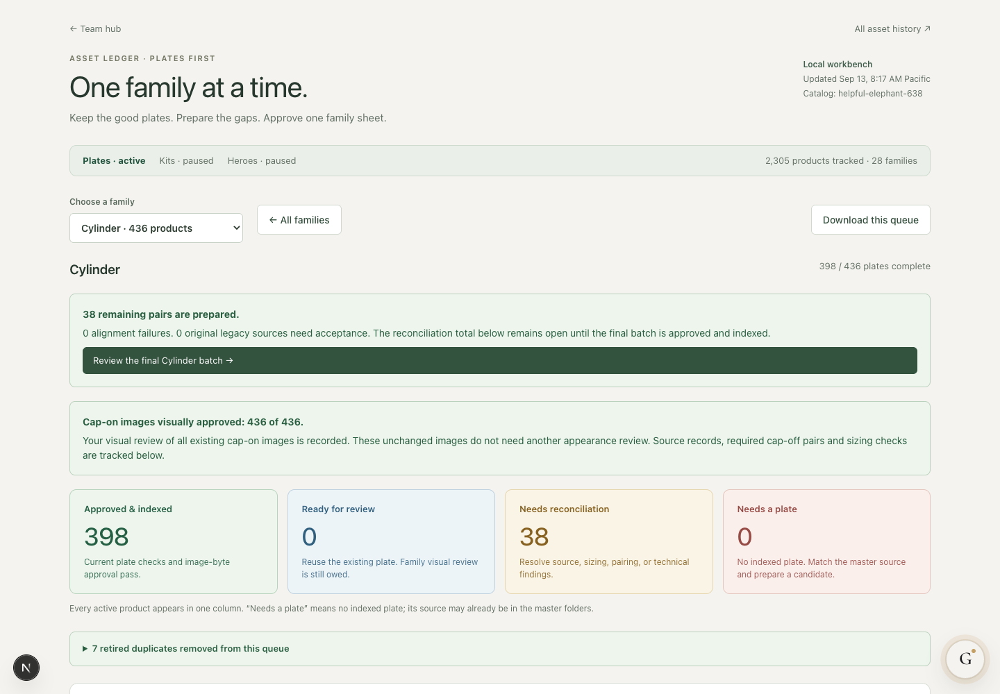
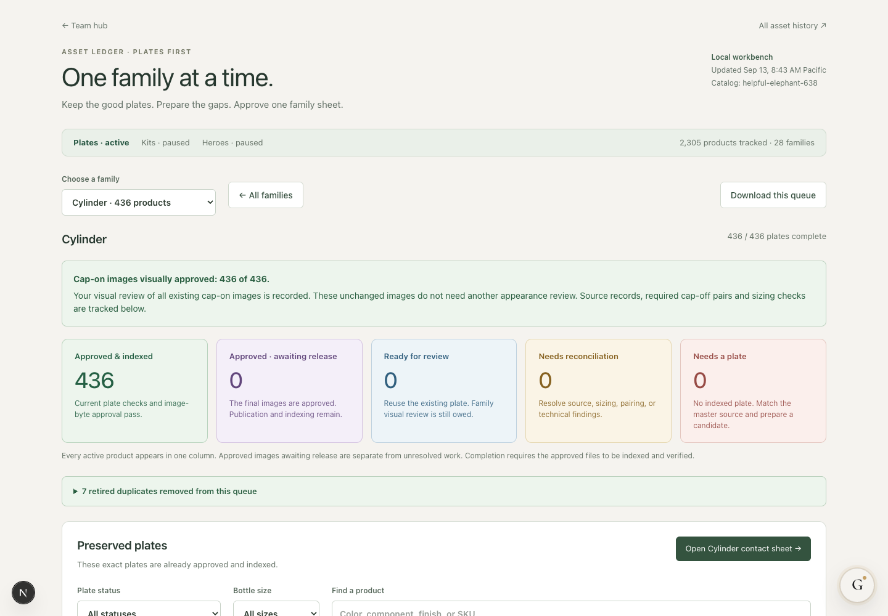
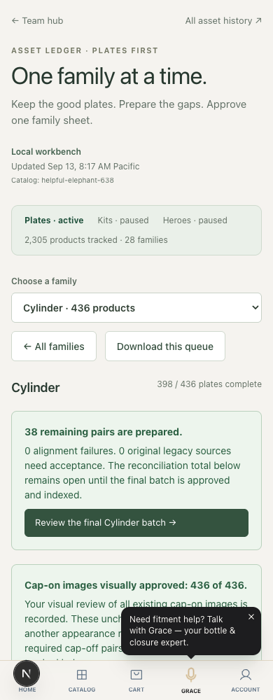
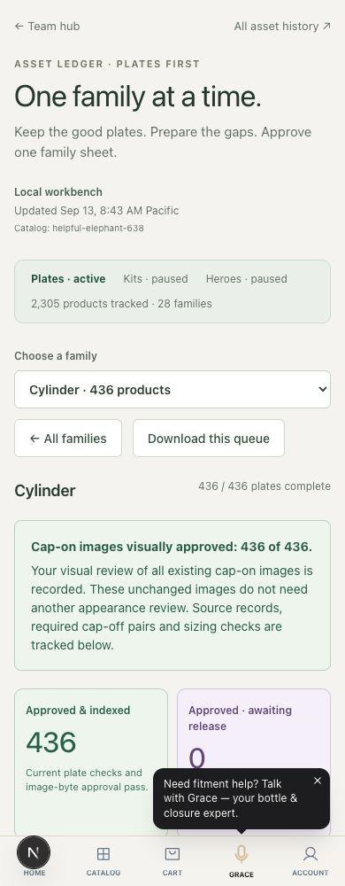

Cylinder ledger — release update
Same viewport and zoom for each comparison. The final 38 image pairs retain Jordan’s approved pixels.
Desktop · 1440 × 1000
Before: 398 indexed; 38 shown as holds
After release and indexing
Mobile · 390 × 1000
Before
After release and indexing